2. 0/1 Knapsack
Binary choices, invalid states, and a maximizing table
Each item offers a take-or-skip decision. The DAG merges equal states; the table evaluates the same maximum from right to left.
- State
- Goal
- Maximize total value without exceeding capacity.
- Base cases
- At the end of the item list, return for feasible capacity and otherwise.
Diagram legend: dotted = pending; blue = active call; green = returned node; orange = return edge; purple = cache hit; gold = chosen max edge.
On this page
- Problem overview and examples
- Plain recursive code; memoized-DAG view
- Step 01 of 30
- Step 02 of 30
- Step 03 of 30
- Step 04 of 30
- Step 05 of 30
- Step 06 of 30
- Step 07 of 30
- Step 08 of 30
- Step 09 of 30
- Step 10 of 30
- Step 11 of 30
- Step 12 of 30
- Step 13 of 30
- Step 14 of 30
- Step 15 of 30
- Step 16 of 30
- Step 17 of 30
- Step 17 cache hit Step 23
- Step 23 of 30
- Step 24 of 30
- Step 24 cache hit Step 26
- Step 26 of 30
- Step 27 of 30
- Step 28 of 30
- Step 29 of 30
- Step 30 of 30
- Local maximizing choice at every state
- Bottom-up code
- Initialization: base cases and invalid capacities
- Cell update 1 of 9: ABC, c=0.0
- Cell update 2 of 9: ABC, c=0.1
- Cell update 3 of 9: ABC, c=0.2
- Cell update 4 of 9: AB, c=0.0
- Cell update 5 of 9: AB, c=0.1
- Cell update 6 of 9: AB, c=0.2
- Cell update 7 of 9: A, c=0.0
- Cell update 8 of 9: A, c=0.1
- Cell update 9 of 9: A, c=0.2
- Completed table and final DAG policy
Problem overview and examples
Problem. Choose a subset of items, using each item at most once, to maximize total value without exceeding the capacity.
Example 1 (used below). Weights , values , capacity output by taking the first two items.
Example 2. Weights , values , capacity output .
Plain recursive code; memoized-DAG view
Every branch reaches item == N; a negative remaining capacity returns .
WT = [0.1, 0.1, 0.2]
VAL = [3, 4, 6]
N = len(WT)
NEG_INF = float("-inf")
def knapsack(item, remaining):
if item >= N:
return (0 if remaining >= 0
else NEG_INF)
take = VAL[item] + knapsack(
item + 1,
round(remaining - WT[item], 1))
skip = 0 + knapsack(
item + 1, remaining)
return max(take, skip)
print(knapsack(0, 0.2)) # 7The code remains plain recursion. The figures merge identical states into a DAG and preview the work that memoization would skip.
Capacities use a grid; rounding preserves this example's states.
Step 01 of 30
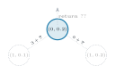
Call (0, 0.2)
Step 02 of 30
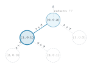
Call (1, 0.1)
Step 03 of 30
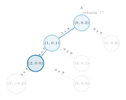
Call (2, 0.0)
Step 04 of 30
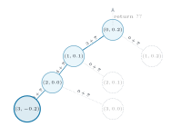
Call (3, -0.2)
Step 05 of 30
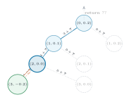
Return from (3, -0.2)
Step 06 of 30
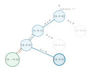
Call (3, 0.0)
Step 07 of 30
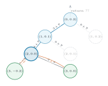
Return 0 from (3, 0.0)
Step 08 of 30
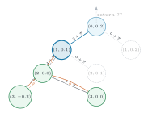
Return 0 from (2, 0.0)
Step 09 of 30
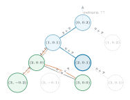
Call (2, 0.1)
Step 10 of 30
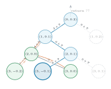
Call (3, -0.1)
Step 11 of 30
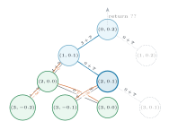
Return from (3, -0.1)
Step 12 of 30
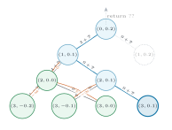
Call (3, 0.1)
Step 13 of 30
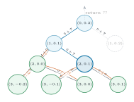
Return 0 from (3, 0.1)
Step 14 of 30
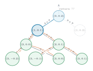
Return 0 from (2, 0.1)
Step 15 of 30
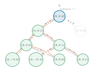
Return 4 from (1, 0.1)
Step 16 of 30
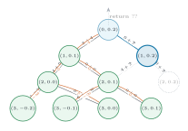
Call (1, 0.2)
Step 17 of 30
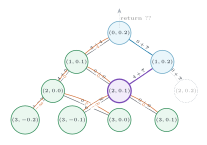
Cache hit: call existing (2, 0.1)
Step 17 cache hit Step 23
Return 0 to (1, 0.2); naive Steps 18 to 22 omitted.
Step 23 of 30
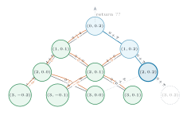
Call (2, 0.2)
Step 24 of 30
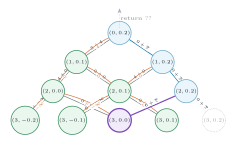
Cache hit: call existing (3, 0.0)
Step 24 cache hit Step 26
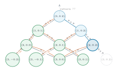
Return 0 to (2, 0.2); naive Step 25 omitted.
Step 26 of 30
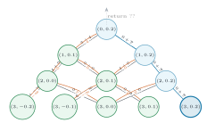
Call (3, 0.2)
Step 27 of 30
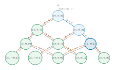
Return 0 from (3, 0.2)
Step 28 of 30
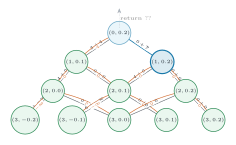
Return 6 from (2, 0.2)
Step 29 of 30
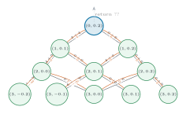
Return 6 from (1, 0.2)
Step 30 of 30
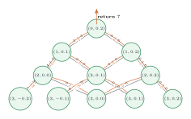
Return 7 from (0, 0.2)
Local maximizing choice at every state
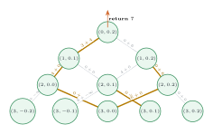
Gold edge = the take or skip child selected by max() at that parent.
Bottom-up code
All weights are positive, so negative-capacity rows are infeasible. Columns A, AB, ABC denote the next item considered; X marks the terminal column.
CAPS = [-0.2, -0.1, 0.0, 0.1, 0.2]
dp = {}
# Same terminal rules as the recursion.
for c in CAPS:
dp[N, c] = 0 if c >= 0 else NEG_INF
for item in range(N):
for c in (-0.2, -0.1):
dp[item, c] = NEG_INF
# Fill columns right to left; rows bottom to top.
for item in range(N - 1, -1, -1):
for c in (0.0, 0.1, 0.2):
take_c = round(c - WT[item], 1)
tail = dp[item + 1, take_c]
take = (NEG_INF if tail == NEG_INF
else VAL[item] + tail)
skip = dp[item + 1, c]
dp[item, c] = max(take, skip)
print(dp[0, 0.2]) # 7Initialization: base cases and invalid capacities
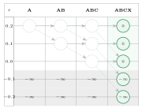
Rightmost column: for . Negative-capacity rows are in every column.
Cell update 1 of 9: ABC, c=0.0
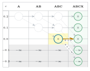
; choose skip.
Cell update 2 of 9: ABC, c=0.1
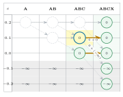
; choose skip.
Cell update 3 of 9: ABC, c=0.2
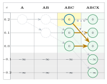
; choose take.
Cell update 4 of 9: AB, c=0.0
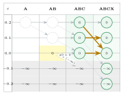
; choose skip.
Cell update 5 of 9: AB, c=0.1
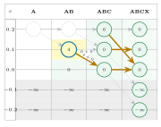
; choose take.
Cell update 6 of 9: AB, c=0.2
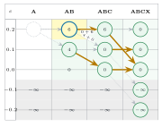
; choose skip.
Cell update 7 of 9: A, c=0.0
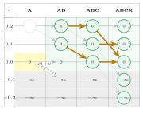
; choose skip.
Cell update 8 of 9: A, c=0.1
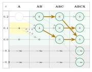
; choose skip.
Cell update 9 of 9: A, c=0.2
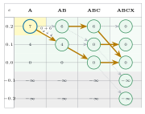
; choose take.
Completed table and final DAG policy
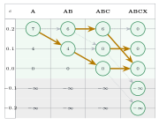
All table values are final. Gold edges show the maximizing choice at every recursive-DAG state; .